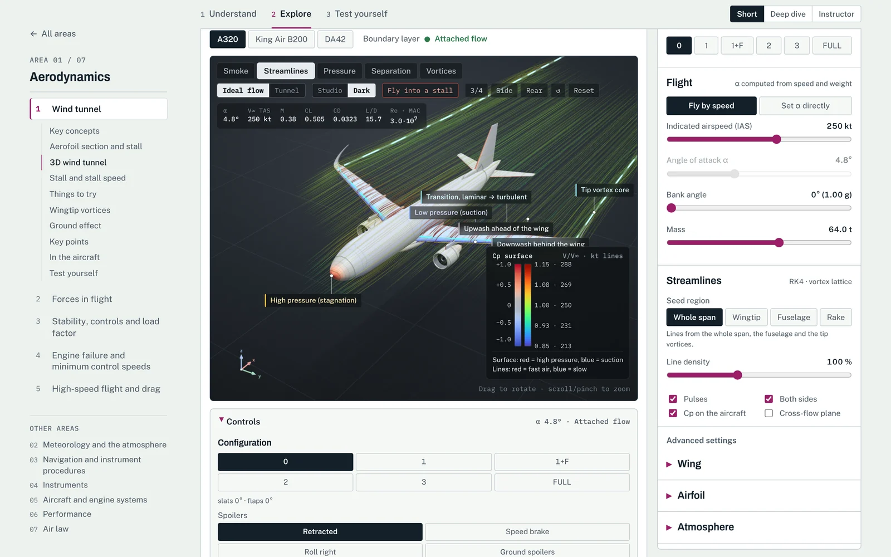
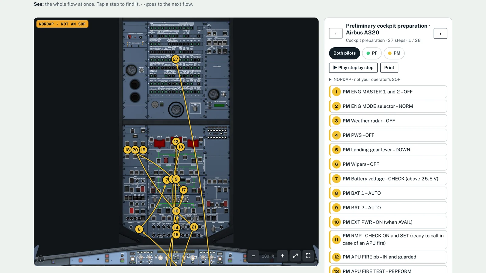
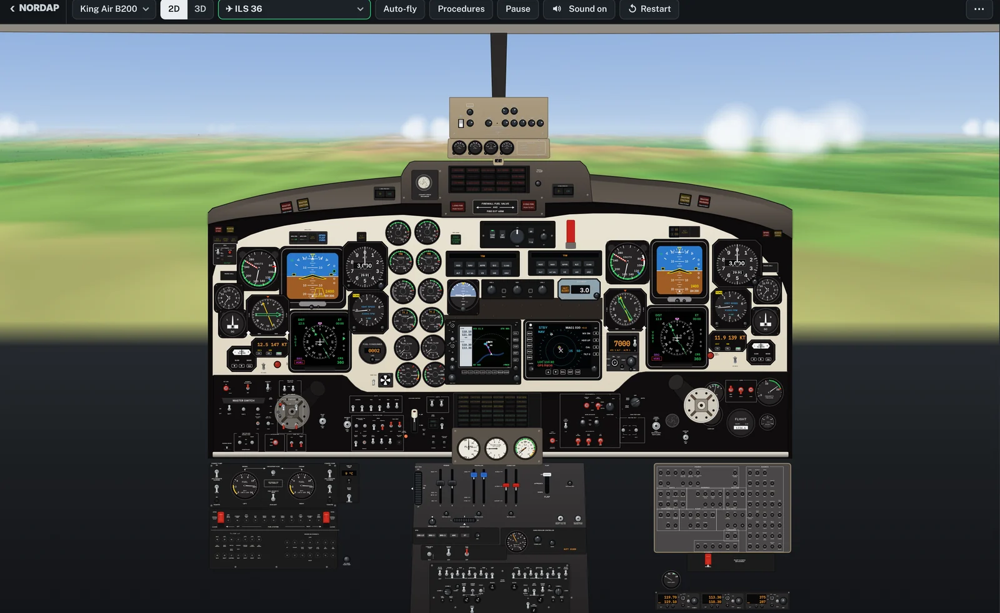
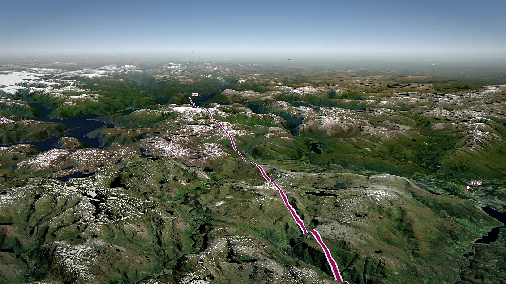

The Nordic Aviation Platform
Interactive theory, flow and cockpit trainers, and a briefing pack for every flight. In your browser, built on EASA rules.
- 24interactive labs
- 13aircraft in the flow trainer
- EASAthe only source for rules

From theory to the flight deck
Four tools in one place, all in the browser. Nothing to install.
Open Virtual Labs
Open the flow trainer
Go to Training
Open Route Explorer




Flight Intelligence
Ask, and see where the answer comes from
Ask about theory, rules or your own aircraft. The answers come from the EASA Easy Access Rules and from the AFM, QRH and SOP you add, each with the paragraph or page it rests on.
- Rules from EASA only
- Every citation names the regulation and its revision.
- Your own documents
- Read and stored in your browser, not on a server.
- Linked to the platform
- Sends you on to the lab or trainer that shows the answer.
Flight Intelligence
Example · illustrative documents
The RVR drops below our minimum as we pass 1,400 ft on the ILS. Can we continue?
Yes, down to 1,000 ft above aerodrome elevation. If the reported RVR is still below your minimum there, you may not continue the approach.CAT.OP.MPA.305
Had it dropped after you passed 1,000 ft, you could continue to DA/H, and go around there without the required visual reference.GM1 CAT.OP.MPA.305
Your SOP adds a check at 1,000 ft: the PM reads out the latest RVR before the PF continues.SOP 6.4 · p. 6-12
Preview. Flight Intelligence runs on a lighter AI model while NORDAP is in testing. Use answers as a study reference, and always check the official source.
Who NORDAP is for
Pilots who want to understand what they do, and arrive prepared.
- Airline and type-rating pilots
Drill the flows and procedures of your type, use your own SOP and checklists, and refresh the theory behind them.
- Private and GA pilots
Plan VFR and IFR flights with a full briefing pack, the weather, the airspace and the terrain along the route.
- Pilots in training
Understand the ATPL theory instead of memorising it, and walk into checkrides knowing the flows.
Standards and sources
What NORDAP builds on, and what it is not.
- Regulations
From EASA only: the Easy Access Rules for Air Operations and Aircrew, and SERA. Summarised and referenced, with the revision.
- Theory
The EASA ATPL learning objectives set the structure. Explanations draw on the FAA handbooks and SKYbrary, in EASA terms and units.
- For learning and preparation
Not an operational source. Figures in the models are illustrative; check everything against the AIP, the flight manual and your operator’s procedures.
Built in Norway
Create an account to save your flows, documents, notes and briefing packs, and pick up where you left off in Flight Intelligence on any device. Questions and feedback are always welcome.